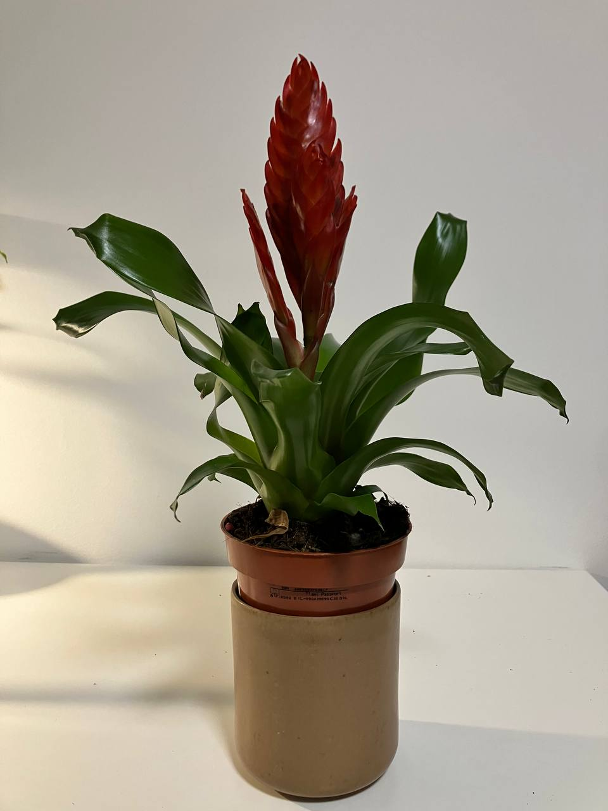

Activity
- Scheduled
- Feed 08-09-2024
- Repot 03-08-2025
Vriesea Poelmanii Red Plant Care Guide
Environment
Light
- Indirect Light: Vriesea Poelmanii Red thrives in bright, indirect light. Avoid direct sunlight as it can cause leaf burn. Place it near a window with filtered light.
Soil
- Well-Draining Soil: Use a well-draining potting mix suitable for bromeliads or orchids. A mix of peat, bark, and sand is ideal.
Temperature
- Warm Temperatures: The plant prefers temperatures between 65-80°F (18-27°C) during the day and slightly cooler at night. Avoid exposure to temperatures below 50°F (10°C).
Routine jobs
Watering
- Watering Schedule: Water the plant moderately, keeping the soil slightly moist but not waterlogged. Allow the top inch of soil to dry out between waterings.
- Central Tank: Fill the central tank (formed by the rosette of leaves) with water. Change the water regularly to prevent stagnation and algae growth.
- Humidity: Maintain high humidity levels. Mist the plant regularly or use a humidifier if the air is dry.
Feeding
- Fertilization: Fertilize monthly during the growing season (spring and summer) with a balanced, diluted liquid fertilizer. Apply it to the soil or the central tank, avoiding the leaves.
Potting
- Container Choice: Choose a pot with good drainage. Vriesea Poelmanii Red has a shallow root system and can be grown in small containers.
- Repotting: Repot the plant when it outgrows its container or when the soil becomes compacted, typically every 2-3 years.
Troubleshooting
- Common Pests: Keep an eye out for pests like mealybugs, aphids, and spider mites. Treat infestations with insecticidal soap or neem oil.
- Leaf Care: Remove any dead or damaged leaves to maintain the plant's health and appearance.
Flowering
- Bloom Cycle: Vriesea Poelmanii Red produces a stunning flower spike. After blooming, the main plant will eventually die, but it will produce offsets (pups) that can be separated and grown into new plants.